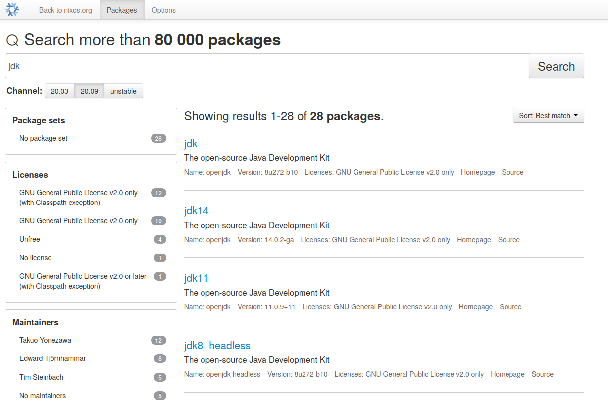

Content

Nix
- OS
- Package Manager
- Language
Malte Neuss
“Reproducible builds and deployments.”

By Tim Cuthbertson CC BY 4.0, https://nixos.org

Nix
Adhoc environments
Reproducible environments
Derivation
Numbers 42
Strings "hello"
List [1 2 3]
Expressions 1+2+3
Attribute Sets { key = value; ... }
Let Bindings let x = ... in ...
Functions f x
Factor out common expression:
Currying
g: (ℝ,ℝ) ⟶ ℝ g: ℝ ⟶ (ℝ ⟶ ℝ)
g: (x,y) ↦ x+y g: x ↦ (y ↦ x+y)Usage
g (3,4) g 3 4
((g 3) 4)# Definition
mkDerivation = overrideAttrs: ...
# Usage
mkDerivation {
name = "myProject-1.0.0";
src = ./src;
}Resulting Derivation
Just a huge attribute set:
# pkgs =
{
stdenv = { mkDerivation = .. ; ... }
...
poetry = stdenv.mkDerivation {... python311 ...}
python39 = ..
python311 = ..
...
git = ....
...
firefox = ...
...
}https://github.com/NixOS/nixpkgs
 https://search.nixos.org
Store
{
boot.kernelPackages = pkgs.linuxPackages_6_5;
users.users.mneuss = { home = "/home/mneuss"; ...};
environment.systemPackages = with pkgs; [
jetbrains.idea-ultimate
python311
];
services.xserver.desktopManager.gnome3.enable = true;
networking.firewall.allowedTCPPorts = [ 80 ];
...
}nixos-rebuild switch ...